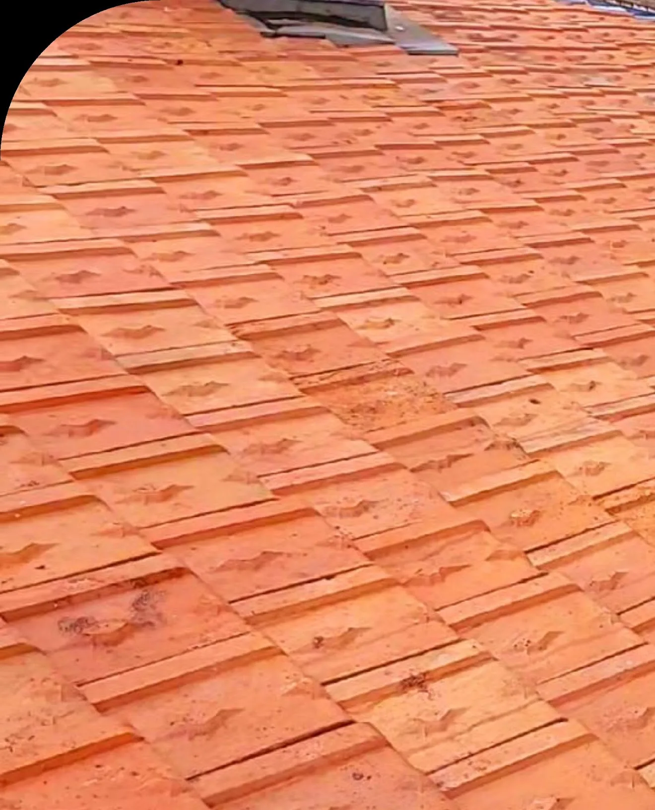

Durée de vie prolongée
01
Traitement de toiture
Je vous propose un procédé exclusif pour prolonger la durée de vie de votre toiture. Je vous accompagne dans sa rénovation, étape par étape.
- Démoussage
- Traitement
- Rinçage
- Réimperméabilisation avec hydrofuge ou peinture de toit
L’entretien préserve la toiture et garantit l’étanchéité et l’isolation de votre habitation.
